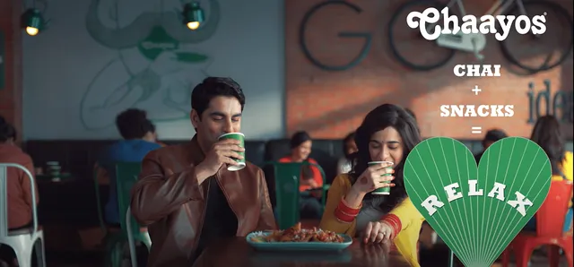
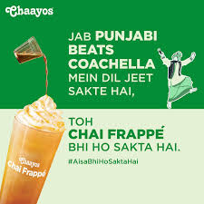

How India's chai disruptor turned everyday tea breaks into personalized lifestyle moments through emotional connection and bold innovation.
Chaayos transformed simple chai into a deeply personalized, emotionally engaging experience by focusing on customization, comfort, and innovation rather than competing on taste or price alone.
The brand's genius lies in turning consumer insights into simple, powerful narratives that feel authentic and build strong emotional connections with urban audiences.
This case study analyzes two landmark campaigns: "Relax with Chaayos" — elevating chai breaks into lifestyle moments — and "Aisa Bhi Ho Sakta Hai" — boldly redefining chai for a new generation.
Chaayos identified a universal truth: people use chai as a pause, a break, a moment to unwind. The campaign elevated this behavior into "Chai + Snacks = Relax" — repositioning from beverage provider to stress-relief destination.
Rooted in authentic consumer habits, the strategy made pairing chai with snacks feel natural. Visuals captured relatable everyday relaxation moments with light, modern urban tone.
"Great brands don't sell products — they own moments. Chaayos turned chai breaks into lifestyle destinations through perfect insight execution."
Digital + targeted outdoor advertising near stores created immediate footfall conversion. The campaign's clarity — one insight, one message, consistent execution — built strong long-term brand equity.

Chai Frappe challenged deep cultural assumptions about hot chai with playful absurdity — monks doing "Tai-Chai," astronauts sipping frappe — making content highly shareable and curiosity-driven.
Targeting experimental younger audiences, the campaign simplified innovation: "If this unexpected thing works, cold chai works too." Short-form digital videos stopped scrolls and drove trial.
"Novelty campaigns must be simple to scale. Chaayos made cold chai culturally acceptable through humor and possibility rather than explanation."
The campaign expanded brand boundaries while staying true to personalization promise. Strong digital execution created buzz that converted to store visits and product trial.

Chai break = relaxation destination. Brands grow by owning specific moments in consumer routines rather than selling products.
Relax campaign builds emotional core. Frappe campaign expands boundaries. Balance creates stable, evolving brand identity.
Both campaigns rooted in real habits — chai+snacks pairing, cultural chai assumptions — making execution feel authentic.
Short-form video + playful absurdity designed for digital platforms creates shareability and immediate curiosity.
One insight per campaign, executed consistently. Complexity kills mass connection — clarity scales.
Targeted outdoor + geo-fencing near stores converts digital awareness into immediate physical store visits.
Chaayos proves brands succeed by turning insights into simple narratives. "Relax with Chaayos" owned the chai break moment. "Aisa Bhi Ho Sakta Hai" redefined category possibilities.
The dual strategy — emotional consistency + boundary-pushing innovation — creates brands that feel both familiar and fresh. Modern marketers must balance both for sustainable growth.
Success came from behavior-first thinking: understand real habits, craft clear stories, execute digitally, convert physically. This chai revolution shows how lifestyle positioning scales.
At Brand Business Talk, we help brands with research, strategy, market insights, and growth recommendations. Let's build your brand growth strategy together.